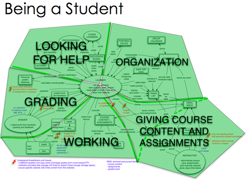
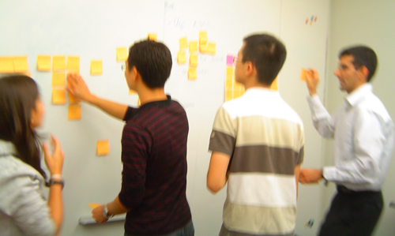
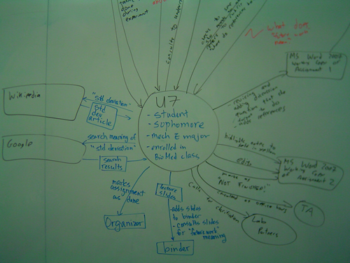
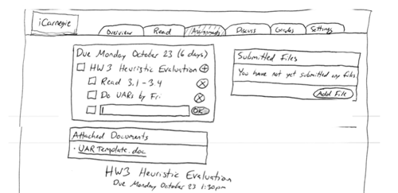
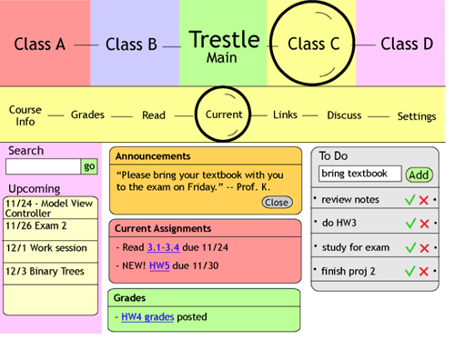

Redesign an online course platform to improve student experience and productivity.
This was my first major project to use Contextual Design from start to finish. Our client wanted to come up with a completely new design for Trestle, an online course platform used around the world, and we agreed to focus specifically on improving students' experience and productivity with the site.
I performed Contextual Inquiries (CIs) of two students in their natural places of work: one online student logged on to her course in a coffee shop to watch recorded lectures, and a Carnegie Mellon student worked on her homework in a campus computer lab.
We ended up performing the most CIs in the class. We learned to be efficient; in one week, we performed and modelled five different CIs. Then, we consolidated all our research in another week. It was a hectic time.
After being elected design lead by the group, I created paper prototypes that we used for Cognitive Walkthrough, Keystroke-Level Modeling, and Think Aloud to assess usability.
With the feedback from the usability tests, I led group discussions to get everybody's input for the final design. I created and delivered the final wireframes to the client along with a document explaining the new design, linking each feature to the findings from our research.